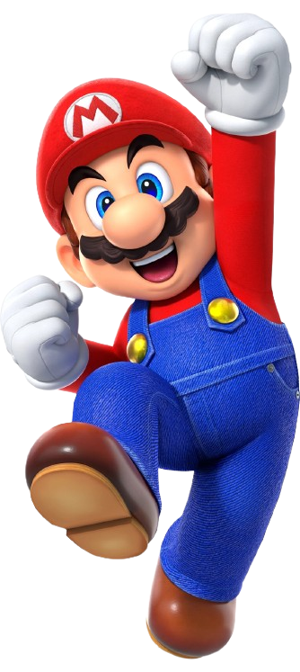
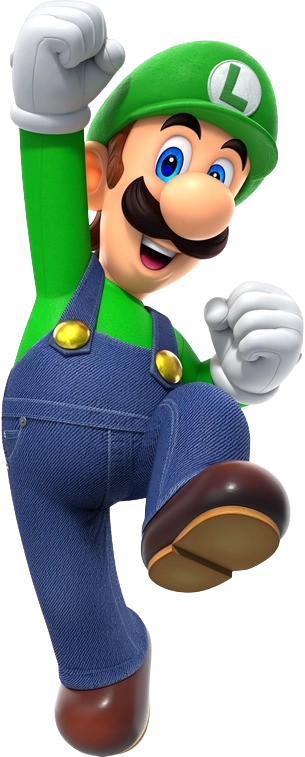
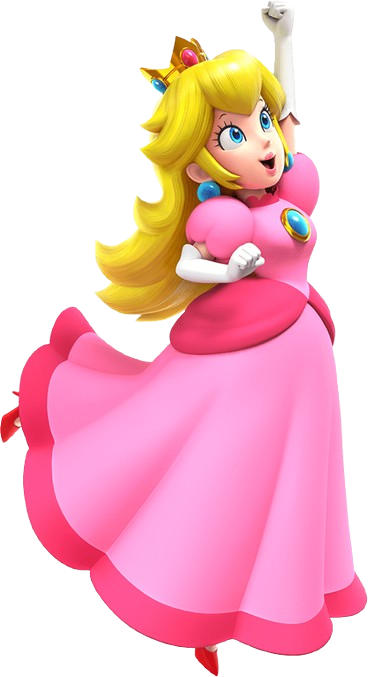
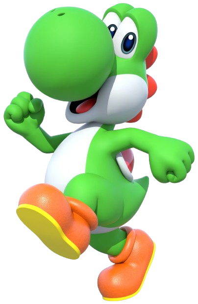

Mario
Mario es el protagonista de la serie de videojuegos Super Mario y la mascota de Nintendo. Fue creado
por Shigeru Miyamoto en 1981 e hizo su primera aparición en el videojuego arcade Donkey Kong. Es un
fontanero estadounidense de origen italiano que actualmente vive en el Reino Champiñón. Como el
héroe que es, se encarga de salvar a la gente, especialmente a la Princesa
Peach, a quien ha salvado
muchísimas veces de las garras del temible Bowser, quien es su archi-enemigo. Es una persona humilde
y de buen corazón, que no le importa cuánto tenga que recorrer para salvar a la gente que necesita
su ayuda.
Ir a inicio

Luigi
Luigi es un personaje principal de la franquicia de videojuegos Super Mario. Es el hermano menor de
Mario. Apareció por primera vez en el juego de arcade del año
1983, Mario Bros.
luego en Super Mario Bros. como segundo jugador, papel que continuó desempeñando en Super Mario
Bros. 3 y Super Mario World. El nombre de Luigi fue inspirado por el restaurante de pizzas cerca de
la sede de Nintendo of America en Redmond, Washington, que se llamaba “Mario & Luigi’s”.
Ir a inicio

Princesa Peach
La Princesa Peach es la princesa del Reino Champiñón. Peach fue creada por Shigeru Miyamoto y es la damisela en apuros en la mayoría de los
juegos de Mario. Desde su debut en Super Mario Bros., Peach ha aparecido en casi todos los juegos de
la franquicia, volviéndose uno de los iconos más conocidos de los videojuegos y el personaje
femenino de los videojuegos más conocido del mundo. Peach es muy amiga de Mario y de Luigi,
llevándose especialmente bien con Mario. A menudo, Peach invita a Mario a su castillo e incluso
invitó a Mario a irse de vacaciones con ella en Super Mario Sunshine. Mario está enamorado de la
princesa, no obstante, en Super Mario Odyssey, Peach demuestra que no está interesada en tener una
relación con él y sólo lo considera como un gran amigo. Pese a esto, en muchos juegos de la saga se
insinúa que Peach realmente siente algo por Mario. Ella también se lleva muy bien con Daisy, siendo
mejores amigas y formando equipo a menudo en varios spin offs como en Mario Kart: Double Dash!! o
Mario Party 7.
Ir a inicio

Yoshi
Yoshi es uno de los personajes principales de la franquicia. Es un amistoso dinosaurio perteneciente
a la especie de su mismo nombre que ha ayudado a Mario y a Luigi, que suelen utilizarlo como una
montura muy útil que les permite superar niveles más fácilmente, en varias aventuras y ha
protagonizado otras. Vive en la Isla de Yoshi, una isla tropical cercana al Reino Champiñón, aunque
visita el reino con frecuencia.